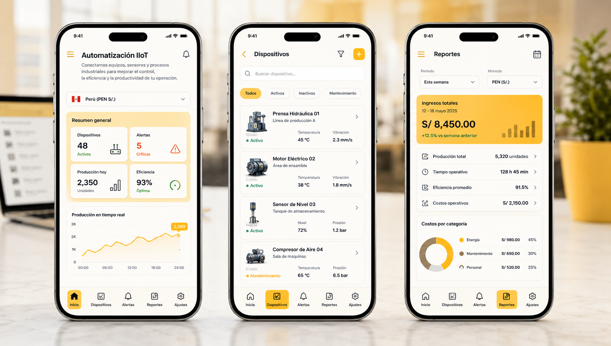

Automatización
e IIoT
Conectamos equipos, sensores y procesos industriales para mejorar el control, la eficiencia y la productividad de tu operación.

Automatizamos para maximizar tu rendimiento
Mayor productividad
Reducimos tiempos muertos y optimizamos el rendimiento de tus procesos.
Monitoreo en tiempo real
Visualiza y controla tus operaciones desde cualquier lugar en todo momento.
Seguridad y confiabilidad
Sistemas robustos y seguros que protegen tus equipos y tus datos.
Reducción de costos
Menos errores, menos retrabajos y mejor uso de recursos energéticos e insumos.
Conectamos y automatizamos cada parte de tu operación
De tus equipos a la nube, todo conectado
Implementamos soluciones IIoT escalables que integran sensores, controladores y plataformas en la nube para convertir datos en decisiones operativas automáticas.
- Conectividad segura y estable
- Integración con sistemas existentes
- Escalabilidad para crecer contigo
- Plataformas abiertas e interoperables
- Almacenamiento
- Procesamiento
- Seguridad
Un enfoque claro, ágil y orientado a resultados
Diagnóstico
Analizamos tus procesos y equipos para identificar oportunidades.
Diseño de solución
Diseñamos la arquitectura IIoT y el plan de implementación.
Implementación
Instalamos, configuramos y conectamos todos los componentes.
Integración
Integramos los datos con tus sistemas y plataformas existentes.
Pruebas y puesta en marcha
Verificamos el funcionamiento y capacitamos a tu equipo.
Monitoreo y mejora
Acompañamos, analizamos y optimizamos continuamente tu operación.

Automation

Utilizamos tecnologías líderes y estándares abiertos para construir soluciones robustas, seguras y escalables.
Manufactura industrial
Monitoreo de máquinas, OEE y producción en tiempo real.
Energía y utilities
Control y monitoreo del consumo, generación y distribución.
Agroindustria
Monitoreo ambiental, riego, silos y procesos productivos.
Infraestructura
Supervisión de instalaciones, sistemas y activos críticos.
¿Listo para automatizar tu operación?
Cuéntanos tu proyecto y te ayudaremos a hacerlo realidad.